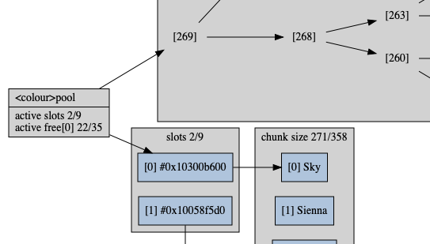

<P>pool is a memory pool that stores <PP>type. Pointers to valid items in the pool are stable, but not generally in any order. When removal is ongoing and uniformly sampled while reaching a steady-state size, it will eventually settle in one contiguous region.
typedef void(*<PSZ>to_string_fn)(const <PSZ>type *, char(*)[12]);
to_string.h: responsible for turning the argument into a 12-char null-terminated output string. <PSZ>type is contracted to be an internal iteration type of the box.
struct <P>pool { struct <PP>slot_array slots; struct poolfree_heap free0; size_t capacity0; };
Consists of a map of several chunks of increasing size and a free-heap. Zeroed data is a valid state. To instantiate to an idle state, see <P>pool, POOL_IDLE, {0} (C99,) or being static.

static void <P>pool(struct <P>pool *const pool)
Initializes pool to idle.
- Order:
- Θ(1)
static void <P>pool_(struct <P>pool *const pool)
Destroys pool and returns it to idle.
- Order:
- Ο(\log
data)
static int <P>pool_buffer(struct <P>pool *const pool, const size_t n)
Ensure capacity of at least n items in pool. Pre-sizing is better for contiguous blocks.
- Return:
- Success.
- Exceptional return: ERANGE, malloc
static <PP>type *<P>pool_new(struct <P>pool *const pool)
This pointer is constant until it gets <P>pool_remove.
- Return:
- A pointer to a new uninitialized element from
pool.
- Exceptional return: ERANGE, malloc
- Order:
- amortised O(1)
static int <P>pool_remove(struct <P>pool *const pool, <PP>type *const data)
Deletes data from pool. Do not remove data that is not in pool.
- Return:
- Success.
- Order:
- Ο(\log \log
items)
static void <P>pool_clear(struct <P>pool *const pool)
Removes all from pool, but keeps it's active state, only freeing the smaller blocks.
- Order:
- Ο(\log
items)
static const char *<SZ>to_string(const <PSZ>box *const box)
src/to_string.h: print the contents of box in a static string buffer of 256 bytes, with limitations of only printing 4 things at a time. <PSZ>box is contracted to be the box itself. <SZ> is loosely contracted to be a name <X>box[<X_TO_STRING_NAME>].
- Return:
- Address of the static buffer.
- Order:
- Θ(1)